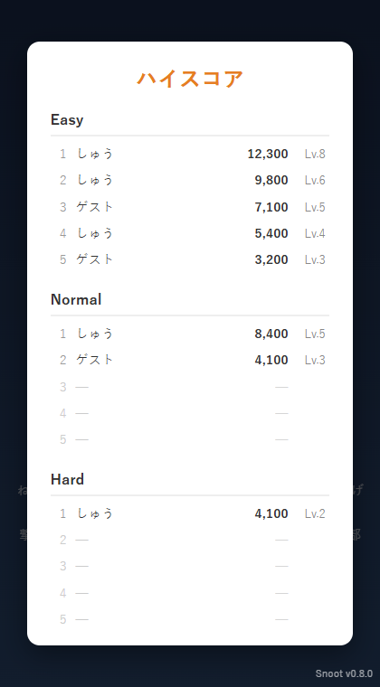
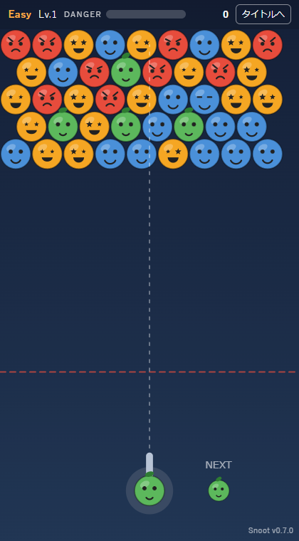
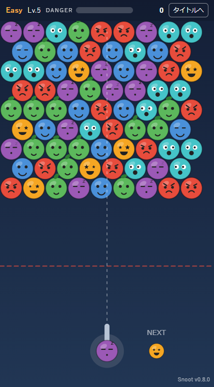
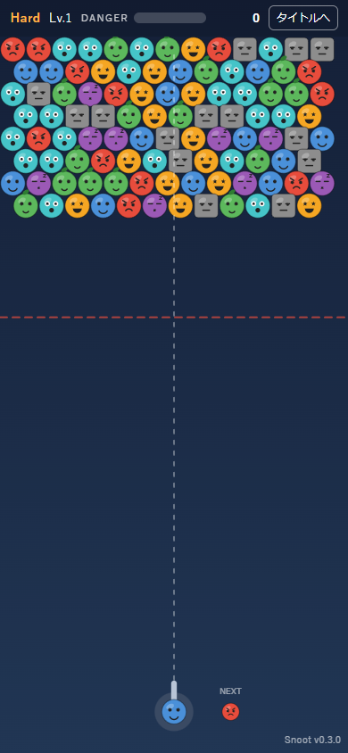
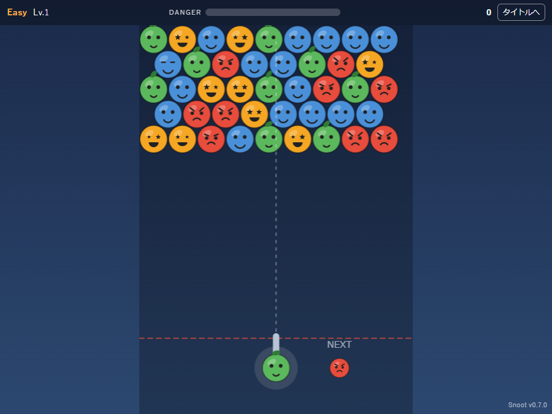
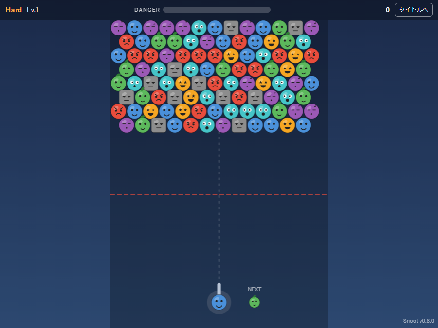

このページについて
step3（人間によるプレイ確認）で挙がったフィードバックと、その対応（step4 → step2 反復）を 時系列で記録する。project.txt の規定により、対応のたびにゲームのバージョンを上げる。 フィードバックが 0 になった時点で step5（一般公開）へ遷移する。
下の一覧は新しい順に並べている。各行の「詳細 →」から、その対応の 原因・対応の詳しい説明とスクリーンショット（ページ下部「対応の詳細」）へ飛べる。
フィードバック一覧
| 日付 | # | 指摘内容（概要） | 対応版 | 詳細 | プレイ |
|---|---|---|---|---|---|
| 2026-06-27 | 20 | クリア時、ボタン表示の前にプレイ情報を順に見せて余韻と達成感を演出してほしい（②b・ショットボーナス＝仕様追加） | v0.9.15 | 詳細 → | ▶ プレイ |
| 2026-06-27 | 19 | 状態切り替えに「間」がない。ゲームオーバー時に失敗の余韻を演出してほしい（②a） | v0.9.14 | 詳細 → | ▶ プレイ |
| 2026-06-25 | 18 | 降りてくる天井を岩っぽくし、降下をアニメ＋低音で「怖さ」を演出してほしい（②c） | v0.9.13 | 詳細 → | ▶ プレイ |
| 2026-06-25 | 17 | クリア時の「次のレベルへ」が他ボタンと同サイズで、押し間違えやすい | v0.9.11 → v0.9.12 | 詳細 → | ▶ プレイ |
| 2026-06-24 | 16 | 原作のように、ねらった角度で奥のくぼみへ撃ち込みたい（手前で止まる） | v0.9.9 | 詳細 → | ▶ プレイ |
| 2026-06-22 | 15 | キャラのセット位置に奥行きの許容範囲が無い（奥の空きに入れられない） | v0.9.6 → v0.9.8 | 詳細 → | ▶ プレイ |
| 2026-06-22 | 14 | iPhone でバージョン表示下の横線が v0.9.4 でも残る（v0.9.2 と大差ない） | v0.9.5 → v0.9.10 | 詳細 → | ▶ プレイ |
| 2026-06-21 | 13 | iPhone でバージョン表示下の帯が盤面と違う色（PC の左右余白と同色）になる | v0.9.4 | 詳細 → | ▶ プレイ |
| 2026-06-20 | 12 | iPhone 画面下端の背景継ぎ目（バージョン表示下の横線）が残る | v0.9.3 | 詳細 → | ▶ プレイ |
| 2026-06-19 | 11 | iPhone のスタンドアロン起動時、画面下端に白い余白が出る | v0.9.2 | 詳細 → | ▶ プレイ |
| 2026-06-19 | 10 | iPhone でステータスバー（時刻・電池）と HUD が重なり「タイトルへ」が押せない | v0.9.1 | 詳細 → | ▶ プレイ |
| 2026-06-17 | 9 | テストしやすいよう PWA 化したい＋アイコンを「ネムリ」に変更したい | v0.9.0 | 詳細 → | ▶ プレイ |
| 2026-06-16 | 8 | ハイスコア画面を枠外タップ／クリックでも閉じたい | v0.8.1 | 詳細 → | ▶ プレイ |
| 2026-06-16 | 7 | 得点が毎回リセットされる。ハイスコアの保存機能がほしい | v0.8.0 | 詳細 → | ▶ プレイ |
| 2026-06-16 | 6 | レベルアップで何が変わるのか分からない。仕様を決めたい | v0.7.0 | 詳細 → | ▶ プレイ |
| 2026-06-13 | 5 | 落下キャラも驚き顔に。大量落下はファンファーレ風の SE にしたい | v0.6.0 | 詳細 → | ▶ プレイ |
| 2026-06-13 | 4 | 消滅キャラを驚き顔に。消滅数が多いほど SE を盛大にしたい | v0.5.0 | 詳細 → | ▶ プレイ |
| 2026-06-13 | 3 | キャラの表情をゲーム中に変化させたい（NEXT は除く） | v0.4.0 | 詳細 → | ▶ プレイ |
| 2026-06-13 | 2 | スマホの操作エリアが狭く、指がキャラ・砲台にかぶる | v0.3.0 | 詳細 → | ▶ プレイ |
| 2026-06-13 | 1 | PC ではキャラサイズが難易度で変わらず、スマホと挙動が違う | v0.2.0 | 詳細 → | ▶ プレイ |
対応の詳細
各項目は一覧と同じ新しい順。見出し右の「↑ 一覧へ戻る」で表へ戻れる。
#20：クリア時、ボタンの前にプレイ情報を順に見せて達成感を演出＋ショットボーナス（v0.9.15・演出②b） ↑ 一覧へ戻る
指摘：状態切り替えに「間」がなく、成功の余韻に浸れない。クリア時は「次のレベルへ」などのボタンを出す前に、ゲーム画面に重ねてそのステージのプレイ情報（「何回ショットしたか？」「スコアは何点だったか？」）を順に表示してほしい（表示ごとに SE で盛り上げる）。あわせて、ショット数が少なくクリアした際は「ボーナススコア」を加点する（仕様追加）。プレイ演出フィードバック②のうち ②b。
原因・対応：従来はクリア確定で即 onEnd → 結果ボタンを表示していた。対応は 3 点。
(1) ショット数の計測：レベル開始（start）で 0 にリセットし、発射（fire）ごとに shots を +1。
(2) ショットボーナス（仕様追加）：レベル開始時のピース数から目安 par = ceil(初期ピース数 / 3) を求め、bonus = clamp(max(0, par − shots) × 100, 0, 1000) を加点。少ない発射数でクリアするほど高い（係数・上限は src/config.ts で調整可能）。
(3) 段階表示：クリア時はボタンを一旦隠し、#result-stats に「ショット数 → スコア → （加点があれば）ショットボーナス」を setTimeout で 1 行ずつフェードイン。各行で SE（tally は行ごとに音程上昇、ボーナスは専用ファンファーレ bonus）を鳴らし、出し切ってからベスト表示とボタンを見せる（誤タップ防止の #17 とも整合）。ゲームオーバーは ②a の骸骨化を見せた後なので従来どおり即表示。
修正ファイル：src/game.ts・src/main.ts・src/audio.ts・src/config.ts・index.html・src/style.css。
par = ceil(初期ピース数 / 3) より少ない発射数でクリアするほど
ボーナス（最大 +1000）が増える（仕様追加）。
#19：ゲームオーバー時、盤面を下→上に骸骨化させて失敗の余韻を演出（v0.9.14・演出②a） ↑ 一覧へ戻る
指摘：ゲームの状態が切り替わる際に「間」がない。失敗してもすぐに結果画面とボタンが出るため、失敗した余韻にプレイヤーが浸る気持ちの間がない（ゲームとして大事）。例として、ゲームオーバー時は即表示せず、埋まったキャラをステージの下方から上方へ順に骸骨風のキャラへ変化させていく（その際の音は暗い重低音のイメージ）。プレイ演出フィードバック②のうち ②a。
原因・対応：従来はデッドライン到達でただちに onEnd を呼び、結果画面（リザルト）を即表示していた。対応は天井降下（②c）と同じ「描画で演出を見せ切ってから onEnd を呼ぶ」遅延パターンを流用して 3 点。
(1) 骸骨化ウェーブ：ゲームオーバー確定時に結果通知を pendingEnd に保留し、gameoverSeq（経過秒）を走らせる。描画では各セルの画面下ほど早く骸骨へ切り替わるしきい値を計算し、下→上の波でキャラを drawSkull（コード描画の骸骨）へ変化させる。変化直後だけ軽くスケールポップさせる。
(2) 暗い重低音：開始時に新 SE doom（低い下降ドローン＋地鳴り）を鳴らす。
(3) 見せ切ってから結果へ：所要 GAMEOVER_SEQ_DUR = 1.6 秒のウェーブを見せ切ってから onEnd を 1 回だけ呼ぶ。天井降下でのゲームオーバーは、降下スライド→骸骨化→結果の順に自然につながる。骸骨化した盤面は結果画面の背後に残す。
修正ファイル：src/game.ts・src/characters.ts・src/audio.ts・src/config.ts。
doom（暗い重低音）とともに
GAMEOVER_SEQ_DUR=1.6 秒の演出を見せ切ってから結果画面を出す。当たり判定や得点は不変で、演出だけを追加している。
#18：降りてくる天井を岩肌にし、降下をアニメ＋低音で怖く演出（v0.9.13・演出②c） ↑ 一覧へ戻る
指摘：危険ゲージが満タンになると降りてくる天井について、(1) 見た目を岩っぽくし、(2) 降りるときもすぐに下げず、アニメーションさせて「怖さ」を演出してほしい（BGM は低い音源）。プレイ演出フィードバック②のうち ②c。
原因・対応：従来の天井は茶色のベタ塗り（#55432c）＋白い線で、降下は危険ゲージ満タン時に rowShift を +1 する一瞬のジャンプだった。対応は 3 点。
(1) 岩肌の描画：石肌のグラデーション＋地層＋下端のギザギザ岩（鍾乳石風の歯）をコードで描画（著作権配慮で画像は使わない）。質感は整数インデックスのハッシュで決定論的に生成し、毎フレームのちらつきを防ぐ（renderRockyCeiling）。
(2) 降下アニメ：当たり判定は論理座標のまま据え置き、描画時だけオフセット dropPx（smoothstep で緩急）を当てて、天井と盤面のピースを 1 行ぶんスライドさせる（所要 CEILING_DROP_DUR = 0.5 秒）。スライド中は誤発射を防ぐため発射をロックする。天井降下でデッドラインに達した場合も、降下を見せ切ってからゲームオーバー画面を出す（pendingEnd で遅延）。
(3) 低音 SE：従来の警告音 alarm を、低い地鳴り＋着地の「ドスン」を重ねた quake に差し替えた。
修正ファイル：src/game.ts・src/audio.ts・src/config.ts。
dropPx でスライドさせて、低い地鳴り（quake）とともにゆっくり降下する。天井降下でデッドラインに達した場合も降下を見せ切ってからゲームオーバー画面を出す。図はコード描画（本家 Snood の画像は使わない）。
#17：クリア時の「次のレベルへ」を大きく強調して誤タップを防ぐ（v0.9.11） ↑ 一覧へ戻る
指摘：ステージクリア後のリザルトで「次のレベルへ」を押したかったのに、誤って「タイトルへ」などを押してしまうことがあった。原因は、3 つのボタン（「同じレベルをもう一度」「次のレベルへ」「タイトルへ」）がすべて同じ大きさで縦に並んでおり、いちばん押したい主要アクションが見分けにくく、隣のボタンと押し間違えやすいこと。
原因・対応：原因＝リザルトの 3 ボタンが共通スタイル（#result-buttons button の font-size:1rem; padding:0.6rem）で同サイズ・等間隔だったこと。
対応＝主要アクションの「次のレベルへ」(#btn-next) だけを一回り大きくした。フォントを大きく（1.3rem）、縦のパディングを増やしてタップ標的を拡大し、下方向の影（box-shadow: 0 3px 0 #3d8b3d）で押せる感を出した。文言の先頭に主要アクションの目印として ▶ を付けた。ボタンの並び順や他 2 つのサイズは変えない（「次へだけ大きく・順序維持」）。ゲームオーバー時は #btn-next が非表示（「もう一度」＋「タイトルへ」の 2 つ）になるため、この強調はクリア画面にだけ効き、ゲームオーバー画面の見た目は従来どおり。src/style.css・src/main.ts を修正。
▶ を付け、指で押し分けやすくした。ゲームオーバー時はこのボタンが非表示になるため、強調はクリア画面にだけ効く。
追記（v0.9.12・拡大が効かない不具合を修正）：v0.9.11 では実機で「次のレベルへ」が影が付くだけで大きくならなかった。原因は CSS の詳細度（specificity）で、共通ルール #result-buttons button（id＋要素型）の方が #btn-next 単独より優先され、font-size・padding の拡大指定が上書きされていた（共通ルールに無い box-shadow だけが効いていた＝「影だけ付く」状態）。対応＝セレクタを #result-buttons #btn-next（id 2 つ）に変えて詳細度を上げ、拡大を確実に適用した。これで上図のとおり実際に一回り大きく表示される。src/style.css を修正。
#16：ねらった角度で奥のくぼみへ撃ち込めるようにする（v0.9.9・判定モデル刷新） ↑ 一覧へ戻る
指摘：Steam で配信中の原作 Snood では、表示された照準角どおりに撃てば予測枠（奥の深いくぼみ）まで弾が滑り込む。これは「キャラの幅を通り道では考慮しない計算方法」だからと考えられる。一方 #15（v0.9.6〜v0.9.8）で奥取りに対応した現状の Snoot でも、まだ赤枠（奥のくぼみ）の手前で止まってしまう。この原作の挙動を Snoot でも実現したい。
原因・対応：原因＝飛行中の当たり判定が、弾の中心を既存キャラ中心から HIT_DIST_RATIO = 0.85×cell 以内で即「衝突」とみなす円オーバーラップ判定＝通り道全体で弾の幅を考慮していたこと。これがくぼみ入口の「肩」に引っかかり、奥へ届く前に止まる。その後の前進処理（chooseLandingCell）は SETTLE_FORWARD_MIN_DOT / SETTLE_MAX_PERP という 2 つの感度パラメータで奥へ押し込もうとする方式で、横向き気味の入口には届きにくく、#15 で繰り返し再調整が続いていた。
対応＝判定を最近傍セル（ボロノイ）方式に刷新した。弾の中心を小刻みに進め、各ステップで「いま中心が最も近いセル」だけを見る。最近接の空きセルより埋まりセルの方が近くなった瞬間＝中心が埋まりセルの領域に入った瞬間に、その直前まで居た空きセル（衝突相手に隣接＝必ず支持済み）へ着地する。弾の幅は着地先セルでだけ効き、通り道では効かないので、ねらった射線どおり奥のくぼみへ滑り込む（＝原作の挙動）。隣り合う 2 つの埋まりセルの境界は両側とも occupied なので、間をすり抜けない（壁抜け防止）。これにより HIT_DIST_RATIO・SETTLE_FORWARD_MIN_DOT・SETTLE_MAX_PERP・SETTLE_MAX_STEPS といった感度パラメータをすべて廃止でき、#15 の再調整地獄から抜けられた。配置の純粋ロジックは src/placement.ts（resolveLanding ほか・DOM 非依存）に切り出し、実モジュールをブラウザ内で読み込んで決定論的に検証した：ランダム盤面×ランダム角度 600 発がすべて「空き＋支持セル」に着地（重なり 0／浮き 0）、くぼみの無い密な壁は貫通せず手前で停止、1 マスのくぼみには肩で止まらず到達。開発者向けの着地予測表示（d キー／?debug）も同じ判定を共有するので表示どおりに着地する。src/game.ts・src/config.ts・src/placement.ts を修正。
0.85×cell の円）を通り道で考慮するため、くぼみ入口の肩に当たって奥のくぼみの手前で止まっていた。
右：対応後（v0.9.9）は最近傍セル（ボロノイ）方式に刷新し、弾の中心がいちばん近い空きセルを辿る。弾の幅は着地先でだけ効くので肩に当たらず、ねらった射線どおり奥のくぼみまで滑り込む（原作 Snood 準拠）。隣り合う埋まりセルの間はすり抜けない（壁抜け防止）。
#15：キャラのセット位置に奥行きの許容範囲を持たせる（v0.9.6） ↑ 一覧へ戻る
指摘：原作 Snood では、発射角度の微調整でキャラを「手前の空きセル」または「その奥（天井側）の空きセル」のどちらにもセットできた。現状の Snoot は、ねらった線の先に空きがあっても衝突したキャラの手前にしかセットされず、その奥の空きセル（図の青〇）に入れられない。原作のように配置に許容範囲を持たせるとゲーム性が上がるので取り入れたい。
原因・対応：原因＝着弾時、弾は最初に当たったキャラの手前で止まり、その停止座標に最も近い空きセルを距離だけで選んでいたため、停止点が常に手前側に固定され、奥のセルは必ず手前のセルに負けていた（src/game.ts の land()）。
対応＝着弾後、進行方向（壁反射後の向き）に沿って空きセルを 1 つずつ前進（グリッド・ウォーク）し、行き止まり手前の最も奥の空き＋支持セルに着地させるようにした。空きセルだけを辿るのでキャラ群は貫通しない。さらに、斜め狙いのときに弾が横方向へ滑ってしまうのを防ぐため、ねらった射線から大きく逸れる前進は弾く（射線からの垂直距離に上限）。これにより、線が通る奥のくぼみまで入れられ、微妙な角度で手前／奥を撃ち分けられる。前進のしきい値などは src/config.ts に定数化（SETTLE_FORWARD_MIN_DOT ほか）。配置の純粋ロジックは src/placement.ts に切り出し、決定論的に動作検証した（奥へ到達／角度で手前に留まる／壁は貫通しない の3ケース）。src/game.ts・src/config.ts・src/placement.ts を修正。
追記（v0.9.7・感度調整）：v0.9.6 を実際にプレイしたところ「奥に入りにくい」との指摘があり、奥のくぼみへ入りやすくなるよう前進の感度を調整した。src/config.ts の SETTLE_FORWARD_MIN_DOT（前進を許す方向の許容角）を 0.5 → 0.35、SETTLE_MAX_PERP（射線からの逸脱上限）を 0.6 → 0.72 に緩めた。経路上の全セルが射線から SETTLE_MAX_PERP 以内に収まる仕組みのため、緩めても横滑りは構造的に 1 セル未満に抑えられ、キャラ群の貫通も起きない。ロジックは変えず定数のみの調整。
追記（v0.9.8・再調整＋開発者向け表示）：まだ奥に入りにくいとの指摘を受け SETTLE_FORWARD_MIN_DOT を 0.35 → 0.25 にさらに緩めた。あわせて着地予測の開発者向け表示を追加：プレイ中に d キーで ON/OFF を切り替えられ（スマホ等では URL に ?debug を付けて開く）、現在の照準で発射した場合に着地するセルを水色のリングと座標で重ね描きする。予測は実弾と同じ移動・衝突・着弾ロジックを使うので、表示どおりのセルに着地する（感度調整の検証に使える）。src/game.ts（predictLanding()／renderLandingPreview()）・src/config.ts を修正。
#14：iPhone でバージョン表示下に残る横線を根本解消（v0.9.5） ↑ 一覧へ戻る
指摘：#11〜#13（v0.9.2〜v0.9.4）で対応してきたが、iPhone 8 のスタンドアロン起動だと v0.9.4 でも「Snoot v0.9.4」の下に細い横線が残り、v0.9.2 とほとんど見え方が変わらない。タイトル画面では横線は出ず、ゲーム画面でだけ出る。
原因・対応：これまでの 3 回はいずれも「背景色を合わせて隠す」対症療法で、横線を生む構造そのものは残っていた。
真因＝画面最下端で「ほぼ同じだが微妙に違う 2 色」が隣接し、その境界が線に見えること。盤面（キャンバス）は透明地に 25% 黒を重ねるため実効色は #19283f（やや濃い）。その背後・周囲の #canvas-wrap 背景は #213654（やや明るい）。iPhone では盤面が画面全幅でキャンバスが #canvas-wrap を覆うため、#213654 は「キャンバスを中央寄せした際の下端のサブピクセル隙間」や「iOS スタンドアロンでレイアウト外に生じる下端帯」としてだけ細く覗き、それが横線に見えていた。v0.9.4 はルート背景の下端帯を #19283f に揃えたが、#canvas-wrap は #213654 のまま残したため、明るい #213654 の細線が消えずに残っていた。
着眼点＝#213654（跳ね返り壁の目印）が実際に見えるのは PC だけ（盤面が画面より狭く左右に余白が出る）。スマホでは盤面が全幅で左右余白＝壁が存在しない。そこで、盤面が全幅のとき（＝スマホ）だけ #canvas-wrap を盤面実効色 --play-bg（#19283f）に揃えるようにした。これで下端に覗く面が「隙間」でも「レイアウト外帯」でも一律 #19283f＝盤面色になり、原因のどちらに転んでも横線が消える。全幅かどうかは resize() の実測値（boardW ≥ availW）で判定して #canvas-wrap にクラスを付け外しするため、PC では従来どおり #213654 の壁が残る。src/game.ts（resize()）と src/style.css を修正。
#19283f）の下端に、キャンバスを覆い切れない隙間から明るい枠色 #213654 が細く覗き、横線として残っていた。
右：対応後（v0.9.5）は盤面が全幅のとき（スマホ）だけ #canvas-wrap も盤面色 --play-bg（#19283f）に揃え、覗く色を盤面と同色にして横線を消した。
左右余白が出る PC では #213654 の跳ね返り壁の目印をそのまま維持している。
追記（v0.9.10・真因の根治）：v0.9.5 の対症（盤面が全幅のとき枠 #canvas-wrap を盤面色に揃える）でゲーム画面の横線は消えたが、iPhone 8 実機で再確認したところ、今度はタイトル画面の下端（版数表示部）に盤面色 #19283f の暗い帯が新たに出る regression が残っていた。
真因＝2 つ。(1) ルート背景のフォールバック単色を常時 --play-bg（#19283f）にしていたため、iOS で本文（height:100%）より下に生じる下端帯がビューポート全体へ伝播し、グラデ裾 --bg-bottom（#2c4870）より暗い #19283f がタイトルで「暗い帯」として露出していた。(2) 盤面（キャンバス）背景が半透明 rgba(0,0,0,0.25) で、全幅時に背後 #canvas-wrap 色×0.75 となり、実効色がルート帯の #19283f と微妙にずれていた。
対応＝(1) ルート背景の既定フォールバックをグラデ裾 --bg-bottom に戻し、ゲーム中だけ <html> に in-game クラスを付けて --play-bg（#19283f）へ切り替える（src/style.css。付け外しは src/main.ts の startGame()／showTitle()）。これでタイトルの下端帯はグラデ裾と同色、ゲーム画面の下端帯は盤面色と同色になり、両画面とも帯が消える。(2) 盤面を不透明 #19283f で直接塗り、背後色依存をなくした（src/game.ts の render()）。PC の見た目（左右の壁マーカー・盤面色）は不変。iPhone 8 実機で帯が消えたことを確認済み（2026-06-25）。src/style.css・src/main.ts・src/game.ts を修正。
#19283f にしていたため、iOS でタイトル画面の下端（版数表示部）に、グラデ裾 #2c4870 より暗い #19283f の帯が露出していた。
右：対応後（v0.9.10）は既定のフォールバックをグラデ裾 --bg-bottom（#2c4870）に戻し、ゲーム中だけ html.in-game で盤面色 --play-bg（#19283f）へ切り替える。あわせて盤面を不透明 #19283f で塗ることで、タイトル・ゲームのどちらも下端帯が背景と同色になり帯が消える。PC の見た目は不変。
#13：iPhone でバージョン表示下の帯を盤面と同色にする（v0.9.4） ↑ 一覧へ戻る
指摘：#11（v0.9.2）で白い帯は消え、#12（v0.9.3）で横線も消えたが、iPhone 8 のスタンドアロン起動だと「Snoot v0.9.3」の下に盤面とは少し違う色の帯が残って違和感がある。その色は PC 版でゲーム画面の左右に見える余白と同じ色。Android のように、iPhone でもこの帯を盤面の背景色と同じに見せたい。
原因・対応：原因＝「ほぼ同じだが微妙に違う 2 色」が併存していたこと。盤面（キャンバス）は透明背景に 25% 黒を重ねており、その背後は #canvas-wrap の #213654 なので実効色は #213654 × 0.75 ≒ #19283f（やや濃い）。一方、PC の左右余白（#canvas-wrap 背景）と、iOS スタンドアロンで文書外に生じる下端余白を塗る html, body の単色フォールバックは #213654（やや明るい）。v0.9.2（白帯対策）と v0.9.3（横線対策）で #213654 を背景に足した結果、キャンバスの背後がグラデーションから単色 #213654 に変わって盤面が一律 #19283f になり、明るい #213654 の余白との差が iPhone 下端の広い平面で目立つようになっていた。
対応＝全体を 1 色に統一はしない。PC ではキャンバス左右の色差がボールの跳ね返り壁の目印になっており、統一すると壁が分かりにくくなるため。PC 左右余白（#canvas-wrap 背景）と iPhone 下端の帯（html, body フォールバック）は別々の面で、フォールバックは PC では表示されない。そこで盤面の実効色を変数 --play-bg: #19283f として定義し、html, body のフォールバックだけ #213654 → --play-bg に差し替えた。これで iPhone 下端の帯だけ盤面色に揃い、PC の跳ね返り壁（#213654）はそのまま残る。src/style.css を修正。
#19283f）より明るい #213654 で違和感がある。
右：対応後（v0.9.4）は html, body のフォールバックを盤面色 --play-bg（#19283f）に変え、帯を盤面と同色にして継ぎ目をなくした。
PC の左右余白（ボールの跳ね返り壁の目印）は #213654 のまま維持している。
#12：iPhone 画面下端の背景継ぎ目（横線）を解消（v0.9.3） ↑ 一覧へ戻る
指摘：#11（v0.9.2）で下端の白い帯は消えたが、iPhone 8 のスタンドアロン起動だと、バージョン表示の下あたり（盤面の最下部）に薄い横線（継ぎ目）がうっすら残って見えた。
原因・対応：原因＝キャンバスを中央寄せする都合で下端にサブピクセルの隙間が生じると、そこに盤面背景（当時は html, body のグラデーションに 25% 黒を重ねた色）より明るい素のグラデーション下端 #2c4870が透けて、細い横線に見えていた。対応＝キャンバスを載せる枠 #canvas-wrap 自体を盤面外周色 #213654 で塗り、隙間に透ける色をキャンバス下端と同系色にして横線を消した。src/style.css を修正。
#2c4870）が透け、薄い横線に見える。
右：対応後（v0.9.3）は #canvas-wrap を #213654 で塗り、隙間に透ける色を同系色にして横線を消した。
#11：iPhone スタンドアロン時の画面下端の白い余白を解消（v0.9.2） ↑ 一覧へ戻る
指摘：iPhone 8 でホーム画面から起動（スタンドアロン）すると、ゲーム画面の最下部に横幅いっぱいの白い帯が出て、濃紺の画面と違和感があった。Android では出ず下端まで途切れない。Android と同様に境目のない見た目にしたい。
原因・対応：原因＝ゲームの濃紺は html, body の背景グラデーション（透明なキャンバスに 25% 黒オーバーレイを重ねたものを透かして見えている）だが、この背景がグラデーション画像のみで単色の background-color を持たないため。iOS スタンドアロンでは高さ 100% の文書の外側に余白領域ができ、そこは画像が届かず既定の白で塗られていた（Android は文書が画面を埋めるので隙間が出ない）。対応＝ルート背景に盤面下端の実効色 #213654（グラデーション下端 #2c4870 に 25% 黒オーバーレイを重ねた色）を単色として併記。ルート要素の背景色はビューポート全体へ伝播するため、余白が盤面と同色で埋まり白帯が消える。通常ブラウザ・PC・Android は隙間が無いので見た目は不変。src/style.css を修正。
#213654）で塗り、Android と同様に継ぎ目をなくした。
#10：iPhone のステータスバー（セーフエリア）との重なり解消（v0.9.1） ↑ 一覧へ戻る
指摘：iPhone 8 でホーム画面から起動（スタンドアロン）すると、上部の HUD（レベル表示・スコア・「タイトルへ」ボタン）が iOS のステータスバー（時刻・電波・電池）と重なって見づらく、ステータスバー領域に隠れた「タイトルへ」ボタンが押せなくなっていた。
原因・対応：原因＝viewport-fit=cover ＋ black-translucent ステータスバー構成でコンテンツが画面最上端から描かれるのに、CSS でセーフエリア（env(safe-area-inset-*)）を考慮していなかったため。さらに iPhone 8 はノッチが無く env(safe-area-inset-top) が 0 を返すので、単純な env() だけでは回避できない。対応＝PWA スタンドアロン起動時のみ（@media (display-mode: standalone)）HUD 上部に max(env(safe-area-inset-top), 20px) の余白を確保してステータスバーを避けた（通常ブラウザ・PC には余白を出さない）。あわせて横向きの左右切り欠き（HUD）と、ノッチ端末のホームインジケータ（盤面下端・バージョン表示）にもインセットを加えた。src/style.css を修正。
env() だけでは足りないのか。
ノッチのある端末（iPhone X 以降）は env(safe-area-inset-top) が 44px 以上を返すが、
ノッチの無い iPhone 8 では black-translucent でも 0 を返す。そのため
max(env(safe-area-inset-top), 20px) とし、ノッチ端末では実値・非ノッチ端末では
20px（ステータスバー高さ相当）をフォールバックに使うことで、どちらの端末でも
ステータスバーを避けられるようにした。各 env() には未対応環境向けに
第 2 引数 0px のフォールバックも付けている。
#9：PWA 化とアプリアイコンの「ネムリ」化（v0.9.0） ↑ 一覧へ戻る
指摘：テストプレイしやすいよう PWA 化したい。あわせて黄色いアプリアイコンを、ゲームキャラに使われている紫の「ネムリ：寝息の浮き沈み」のアイコンに変更したい。
原因・対応：スマホで「ホーム画面に追加」でき、スタンドアロン（全画面）で起動・オフライン対応する PWA にした。今後のこまめな更新が確実に届くよう、vite-plugin-pwa の autoUpdate でビルド毎に Service Worker を更新し、インストール済みアプリが次回起動時に自動で最新化する方式を採用。配信場所（play/<tag>/・XServer サブディレクトリ）が一定しないため manifest / SW 登録をすべて相対パスにした。アイコンは著作権配慮のため本家画像を使わず、drawSnoot() の type=4（ネムリ）から生成（scripts/make-icons.mjs）。詳細は step4：PWA 化。vite.config.ts・index.html・package.json・.github/workflows/deploy.yml を修正、public/ アイコンと scripts/make-icons.mjs を追加。
#8：ハイスコア画面を枠外タップでも閉じる（v0.8.1） ↑ 一覧へ戻る
指摘：ハイスコア画面の閉じ方が「閉じる」ボタンだけだと使いにくい。ウィンドウの枠外をタッチ／クリックしても閉じられるようにしたい。
原因・対応：ハイスコアのオーバーレイ背景（枠外）をタップ／クリックしたときも閉じるようにした。ボックス内側のタップでは閉じないよう、イベントの対象がオーバーレイ自身のときだけ閉じる判定にしている。名前入力オーバーレイは途中で閉じると記録フローが中断するため、対象外（従来どおりボタン操作）。src/main.ts を修正。
#7：ハイスコア保存機能（v0.8.0） ↑ 一覧へ戻る
指摘：得点が毎回リセットされ記録に残らないので、やる気が出にくい。ハイスコアの保存機能をつけたい（原作のリサーチを踏まえて）。
原因・対応：原作 Snood を調査したところ、難易度別のローカル・ベストスコア表（名前入力あり）に加え、SnoodWorld.com のオンライン世界ランキング（検証コード付き）という二層構造だった。Snoot は「ブラウザ完結・ゼロコスト・オフライン」が制約のため、オンライン世界ランキングは対象外とし、原作のローカル表を localStorage による難易度別 Top5 ランキングとして再現。新記録達成時に名前を入力（前回名を既定表示）し、タイトルの「ハイスコア」ボタンとリザルトから閲覧できる。「次のレベルへ」で続く間は記録せず、最終的なゲームオーバー（または途中でタイトルへ戻ったとき）に積み上げ得点を 1 回だけ記録する。src/scores.ts（新規）・src/main.ts・src/game.ts・index.html・src/style.css を追加／修正。
難易度ごとに自分のベスト 5 が残るようにした。新記録を出すと名前を入力でき
（前回名が既定で入る）、タイトルの「ハイスコア」ボタンといつでも見返せる。スコアは
ブラウザの localStorage に保存するので、閉じても次回に残る。

保存仕様：
- 難易度別に Easy / Normal / Hard それぞれ上位 5 件を保持（得点は難易度で スケールが違うため別管理）。各記録は 名前・スコア・到達レベル・日付を持つ
- 保存先は
localStorage（キーsnoot.highscores.v1）。サーバを使わない ブラウザ完結・ゼロコスト方式。データが壊れていても安全に空表示へフォールバックする - 記録のタイミングは「同じプレイ（連続レベル）につき 1 回」。「次のレベルへ」で 続く間は記録せず、最終的なゲームオーバー、または途中でタイトルへ戻ったときに、 積み上げたスコアを 1 回だけ記録する（同一プレイの途中得点で表が埋まらない）
localStorage で再現した。
#6：レベルアップによる段階的難化（v0.7.0） ↑ 一覧へ戻る
指摘：クリアすると次のレベルへ進めるが、レベルが上がったときに何が変化しているのか分からなかった。レベルアップで何が変わる仕様にするのか決めたい（原作 Snood に合わせるかどうかを含めて）。
原因・対応：原因＝level は HUD 表示とスコア引き継ぎにしか使われておらず、盤面の難しさは難易度（Easy/Normal/Hard）だけで決まり、レベルでは一切変わっていなかった。原作 Snood を再調査したところ、原作の Classic も面を進めて難化はせず、難化するのは難易度ラダーを上る Journey モードだった（下記参照）。検討の結果、原作 Classic そのままではなく現代のバブルシューター流に「選んだ難易度を起点として、レベルが上がるほど段階的に難化させる」方式を採用。レベル+1ごとに 初期行数+1 / 危険ゲージ容量-1（天井がより速く降りる） / キャラ種類数+1（2レベルごと）で難化させ（各値に上限・下限）、クリアボーナスも高レベルほど増やした。あわせてリザルトに到達レベルを明示し、「次のレベルへ（Lv.N）」表示と retry のレベル整合も修正。src/config.ts・src/game.ts・src/main.ts を修正。
同じ難易度（Easy）でも、レベルが上がると 初期行数が増え（盤面がより埋まる）、 キャラの種類が増え、危険ゲージが満タンになるまでの発射数が減る（天井がより速く降りる）。 下のスクリーンショットは同じ Easy の Lv.1 と Lv.5 の開始直後で、盤面の埋まり方が違う。


レベルごとの難化（Easy を起点とした例。各値は上限・下限で頭打ち／底打ち）：
| レベル | 初期行数 | 危険ゲージ容量 | キャラ種類数 |
|---|---|---|---|
| Lv.1（起点） | 5 | 10 | 4 |
| Lv.2 | 6 | 9 | 4 |
| Lv.3 | 7 | 8 | 5 |
| Lv.4 | 8 | 7 | 5 |
| Lv.5 | 9 | 6 | 6 |
| Lv.6 以降 | 10（上限） | 5 → 3（下限） | 7（上限） |
ルール＝レベル+1ごとに「初期行数 +1」「危険ゲージ容量 −1」「キャラ種類数 +1（2 レベルごと）」。 盤面の列数は見た目を難易度間で揃えるためレベルでは変えない。Normal / Hard も同じルールで、 起点の値が高いぶん早く上限・下限に達する。
#5：落下キャラの驚き顔＋大量落下のファンファーレ SE（v0.6.0） ↑ 一覧へ戻る
指摘：消滅キャラに加えて、それに伴って落ちていくキャラの表情も驚き顔にすると迫力が増す。またまとめて落としたときの低音は迫力を感じないので、ファンファーレのような SE に変更したい。
原因・対応：落下アニメ中のキャラも驚き顔で描画するよう変更（v0.5.0 で追加した驚き顔を再利用）。大量落下（4 個以上）の SE を、低音スイープからブラスふうの上昇ファンファーレ（タタタ・ターン型）に差し替え、落下数が多いほど最後の和音が厚くなる（6 個以上で三和音、9 個以上でさらに 1 声）方式にした。src/game.ts・src/audio.ts を修正。
#4：消滅キャラの驚き顔＋消滅数連動の SE（v0.5.0） ↑ 一覧へ戻る
指摘：グループが消滅する際、消えるキャラの表情が驚いた顔になるエフェクトでさらにコミカルに。また消滅数が多いときは SE を少し盛大にしてほしい（嬉しさが増す）。
原因・対応：消滅アニメ中のキャラを驚き顔（見開いた白目・大きく開いた口・コミック風の驚き線）に差し替え。体の色・形・葉っぱ等の個性は維持。SE は消滅数に応じてアルペジオの音数（5 個以上で 4 音、8 個以上で 5 音）と音量が増える方式にし、まとめて落としたときは低音スイープも重なる。src/characters.ts・src/audio.ts・src/game.ts を修正。
#3：キャラの表情アニメーション（v0.4.0） ↑ 一覧へ戻る
指摘：本家はキャラの表情が変化してコミカルさを出していた。Snoot もゲーム中に表情を変化させたい。ただし NEXT のキャラは表情を変えない（目立たせると現在弾と勘違いするため）。
原因・対応：キャラ描画関数に時刻引数を追加し、種類ごとのアニメ（マルオ：まばたき、ハッパ：葉っぱ揺れ、プンタ：眉ピクピク、ヒナタ：星キラキラ＋口の開閉、ネムリ：寝息の浮き沈み、ビック：瞳の泳ぎ＋口の大小、イシゴロ：たまに目を閉じるのみ）を実装。盤面・発射弾・砲台の現在弾はアニメし、NEXT は誤認防止のため意図的に静止のまま。セルごとに位相をずらして一斉まばたきも防止。src/characters.ts・src/game.ts を修正。
#2：スマホの操作エリア拡大（v0.3.0） ↑ 一覧へ戻る
指摘：スマホで赤い点線の上をスワイプすると指がキャラにかぶり、点線の下は操作部分が狭くて砲台に指がかぶる。操作できる範囲に余裕がほしい。
原因・対応：操作エリア（点線から下）が固定 3 セル分しかなく、画面の余り高さが上下余白として捨てられていたのが原因。キャンバスが画面の縦をすべて使うようにし、砲台を画面下端近くへ移動。点線と砲台の間の広い空間がスワイプ用の操作エリアになった。あわせて砲台より下に指がある間は照準を更新しないガードを追加。src/game.ts の resize()・onPointer() を修正。
赤い点線と画面下端近くの砲台の間が広いスワイプ空間になり、指がキャラ・砲台にかぶらない。


#1：難易度によるキャラサイズの統一（v0.2.0） ↑ 一覧へ戻る
指摘：スマホでは難易度によってキャラのサイズが大中小と変わるのに、PC ではサイズが一定で挙動が違う。
原因・対応：サイズの自動フィット計算で、縦長画面では「幅÷列数」、横長画面では「高さ÷行数（列数非依存）」が採用されていたのが原因。盤面の横幅を難易度によらず一定とし、列数が増えるほどキャラが小さくなる方式に統一（PC もスマホと同じ見た目に）。src/game.ts の resize() を修正。
PC でも盤面の横幅は難易度によらず一定で、列数が増えるほどキャラが小さくなる（スマホと同じ見た目）。


未対応・検討中
（現在なし）